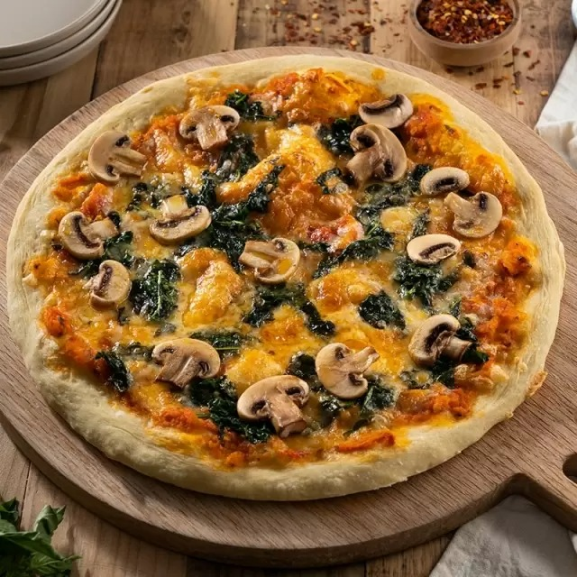

Receta de pizza con champiñones
Ingredientes
Para la masa
- 250 gr de harina
- 2 cucharadas de aceite de oliva virgen
- Papel para hornear
- Queso rallado
- 1 cucharadita de pimentón dulce
- Aceite de oliva virgen
Ingredientes
Para la salsa
- 1 cebolla
- 1 cucharada de aceite de oliva virgen
- 1 cucharadita de pimentón dulce
- 1/2 cucharadita de ají
- 25 gr de levadura fresca
- Sal al gusto
Ingredientes
Para la cobertura
- 3 champiñones naturales
- 1 lata pequeña de aceitunas negras
- Sal y pimienta al gusto
- 1 cebolla1 lata grande de tomate triturado
- 1 cucharadita de orégano triturado
- 1/2 cucharadita de pimienta
- Sal al gusto
Preparación
- Los champińones y las aceitunas, negras o verdes, combinan muy bien, de hecho es común encontrarlos juntos en las ensaladas. Esta vez hemos pensado que una pizza con champińones y aceitunas negras puede ser una buena opción si nos apetece comer algo más consistente que una ensalada pero con exactamente estos ingredientes.
- 1. Comenzamos preparando la masa de la pizza y, para ello, tamizamos la harina en un bol amplio y la esparcimos de tal forma que la dejamos en forma de un volcán. En el medio de este volcán echamos la levadura fresca, que previamente habremos disuelto en el agua tibia, el aceite de oliva virgen y la sal al gusto. Mezclamos todos los ingredientes con las manos y, cuando tengamos una masa consistente, la colocamos en una superficie plana enharinada.
- 2. En esta superficie enharinada continuamos amasando la masa hasta que consigamos que no se quede pegada a los dedos. Entonces, le damos forma de bola y la colocamos en el bol tapada con un trapo húmedo reposando durante una hora para que doble su volumen.
- 3. Pasada la hora, sacamos del bol la masa y la ponemos en la superficie enharinada. Con ayuda de un rodillo, trabajamos la masa y la dejamos finita con forma de pizza. Entonces, la ponemos sobre la bandeja del horno forrada con papel para hornear y la dejamos reposar hasta que pongamos la cobertura en ella.
- 4. Ahora que ya tenemos la masa de la pizza lista, podemos preparar la cobertura. Para ello, ponemos una sartén con aceite de oliva virgen en la sartén y, cuando esté caliente, salteamos los champińones laminados y condimentados con la pimienta, el orégano, el pimentón y la sal y la pimienta al gusto. Cuando estén blandos, los escurrimos en papel absorbente y los reservamos.
- 5. Ahora preparamos la salsa de la pizza y, para ello, ponemos una sartén en el fuego con aceite de oliva virgen y sofreímos en ella la cebolla picada. Cuando esté pochada, echamos el tomate triturado junto con la sal al gusto, el pimentón, el ají triturado, el orégano y la pimienta. Cuando esté lista, apagamos el fuego y bańamos la masa de la pizza con ella.
- 6. Entonces, ponemos los champińones y las aceitunas negras troceadas por encima junto con el queso rallado, y la metemos a hornear a una temperatura de 180ş durante 15 o 20 minutos.